Contents
- QUESTION 1 COMMENTING
- QUESTION 2: Z-TRANSFORM
- 2 (a) FILTER 1
- 2 (b) FILTER 2
- 2 (c) ANSWER QUESTION
- 2 (d) ANSWER QUESTION
- 2 (e) ANSWER QUESTION
- QUESTION 3: IIR FILTERS IN Z-DOMAIN
- 3 (a) FILTER 1
- 3 (b) ANSWER QUESTIONS
- 3 (c) FILTER 2
- 3 (d) ANSWER QUESTIONS
- 3 (e) FILTER 3
- 3 (f) ANSWER QUESTIONS
- 3 (g) NOTCH FILTER
- 3 (h) NOTCH FILTER APPLIED TO AUDIO
- 3 (i) ANSWER QUESTIONS
- ALL FUNCTIONS SUPPORTING THIS CODE %% % ==================================================================
QUESTION 1 COMMENTING
DO NOT REMOVE THE LINE BELOW MAKE SURE 'eel3135_lab08_comment.m' IS IN THE SAME DIRECTORY AS THIS FILE
clear; close all; clc; type('eel3135_lab08_comment.m')
%% QUESTION #1 COMMENTING
clear
close all
clc
%% DEFINE FILTER AND INPUT
w = -pi:pi/8000:pi-pi/8000; % Frequency range for plotting
N = 100; % Number of Samples
n = 0:(N-1); % Sample indices
% FILTER 1
a1 = [1 0 0 0 0 0 0 -0.9]; % Coefficients for the denomintor (poles)
b1 = 1; % Coefficients fro the numerator (zeros)
% <-- Answer: Is this an IIR filter or a FIR filter? Why?
% This is an Infinite Impulse Response (IIR) filter because it has poles
% that are in it's structure (not at 0; z = -1, 0.9)
% <-- Answer: How many poles does this system have? How many zeros?
% This system has 7 poles and 1 zero
% FILTER 2
a2 = [1 -0.9]; % Coeffieients of the denominatior (poles)
b2 = 1; % Coeffiecients of the numerator (zeros)
% <-- Answer: Is this an IIR filter or a FIR filter? Why?
% This is an IIR filter becausee it has poles in locations other than zero
% (z = -1, 0.9)
% <-- Answer: How many poles does this system have? How many zeros?
% The system has 1 pole and 1 zero
% INPUT
x = zeros(N,1); % Initializes input signal
x(1) = 1; % Sets first sample to 1 (impulse signal)
%% DEFINE AND PLOT OUTPUT
% OUTPUT 1
y1 = filter(b1,a1,x); % Applies filter 1 to input signal
y2 = filter(b2,a2,x); % Applies filter 2 to input signal
% OUTPUT 2
H1 = DTFT(y1,w); % Compute the DTFT of the output from filter 1
H2 = DTFT(y2,w); % Compute the DTFT of the output from filter 2
% OUTPUT 3: CASCADE FILTERS
y3 = filter(b2, a2, filter(b1, a1, x)); % Cascade filter 1 and filter 2
H3 = DTFT(y3,w); % Computes the DTFT of the cascaded output
% <-- Express H3(z) as a function of H1(z) and H2(z)
% H3(z) = H1(z) * H2(z), since casecading filters in the time domain
% corresponds to multiplication in the frequency domain, specifically
% H3(z) = z^8/[(z^7 - 0.9)*(z^7 + 0.8)]
% PLOT THE FREQUENCY REPONSE IMPULSE RESPONSE AND DTFT
figure(1)
subplot(3,1,1)
stem(n,y1)
xlabel('Time (Samples)')
ylabel('h[n]')
subplot(3,1,2)
plot(w,abs(H1))
title('Magnitude Response of h1')
xlabel('Normalized Frequency (Radians)')
ylabel('Magnitude')
subplot(3,1,3)
pzplot(b1,a1)
axis equal
% PLOT THE FREQUENCY REPONSE IMPULSE RESPONSE AND DTFT
figure(2)
subplot(3,1,1)
stem(n,y2)
xlabel('Time (Samples)')
ylabel('h[n]')
subplot(3,1,2)
plot(w,abs(H2))
title('Magnitude Response of h2')
xlabel('Normalized Frequency (Radians)')
ylabel('Magnitude')
subplot(3,1,3)
pzplot(b2,a2)
axis equal
% PLOT THE FREQUENCY REPONSE IMPULSE RESPONSE AND DTFT
figure(3)
subplot(2,1,1)
stem(n,y3)
xlabel('Time (Samples)')
ylabel('h[n]')
subplot(2,1,2)
plot(w,abs(H3))
title('Magnitude Response of h3')
xlabel('Normalized Frequency (Radians)')
ylabel('Magnitude')
%% ALL FUNCTIONS SUPPORTING THIS CODE %%
% ==================================================================
% NOTE: YOU DO NOT NEED TO ADD COMMENTS IN THE CODE BELOW. WE JUST
% NEEDED POLE-ZERO PLOTTING CODE AND THUS WROTE IT.
% ==================================================================
function pzplot(b,a)
% PZPLOT(B,A) plots the pole-zero plot for the filter described by
% vectors A and B. The filter is a "Direct Form II Transposed"
% implementation of the standard difference equation:
%
% a(1)*y(n) = b(1)*x(n) + b(2)*x(n-1) + ... + b(nb+1)*x(n-nb)
% - a(2)*y(n-1) - ... - a(na+1)*y(n-na)
%
% MODIFY THE POLYNOMIALS TO FIND THE ROOTS
b = b(1:find(b,1,'last'));
a = a(1:find(a,1,'last'));
b1 = zeros(max(length(a),length(b)),1); % Need to add zeros to get the right roots
a1 = zeros(max(length(a),length(b)),1); % Need to add zeros to get the right roots
b1(1:length(b)) = b; % New a with all values
a1(1:length(a)) = a; % New a with all values
% FIND THE ROOTS OF EACH POLYNOMIAL AND PLOT THE LOCATIONS OF THE ROOTS
h1 = plot(real(roots(a1)), imag(roots(a1)));
hold on;
h2 = plot(real(roots(b1)), imag(roots(b1)));
hold off;
% DRAW THE UNIT CIRCLE
circle(0,0,1)
% MAKE THE POLES AND ZEROS X's AND O's
set(h1, 'LineStyle', 'none', 'Marker', 'x', 'MarkerFaceColor','none', 'linewidth', 1.5, 'markersize', 8);
set(h2, 'LineStyle', 'none', 'Marker', 'o', 'MarkerFaceColor','none', 'linewidth', 1.5, 'markersize', 8);
axis equal;
% DRAW VERTICAL AND HORIZONTAL LINES
xminmax = xlim();
yminmax = ylim();
line([xminmax(1) xminmax(2)],[0 0], 'linestyle', ':', 'linewidth', 0.5, 'color', [1 1 1]*.1)
line([0 0],[yminmax(1) yminmax(2)], 'linestyle', ':', 'linewidth', 0.5, 'color', [1 1 1]*.1)
% ADD LABELS AND TITLE
xlabel('Real Part')
ylabel('Imaginary Part')
title('Pole-Zero Plot')
end
function circle(x,y,r)
% CIRCLE(X,Y,R) draws a circle with horizontal center X, vertical center
% Y, and radius R.
%
% ANGLES TO DRAW
ang=0:0.01:2*pi;
% DEFINE LOCATIONS OF CIRCLE
xp=r*cos(ang);
yp=r*sin(ang);
% PLOT CIRCLE
hold on;
plot(x+xp,y+yp, ':', 'linewidth', 0.5, 'color', [1 1 1]*.1);
hold off;
end
function H = DTFT(x,w)
% DTFT(X,W) compute the Discrete-time Fourier Transform of signal X
% acroess frequencies defined by W.
H = zeros(length(w),1);
for nn = 1:length(x)
H = H + x(nn).*exp(-1j*w.'*(nn-1));
end
end
QUESTION 2: Z-TRANSFORM
% DEFINE AXES/PARAMETERS w = -pi:pi/500:pi-pi/500; % Frequencies N = 100; % Number of samples n = 0:(N-1); % Sample indicies x1 = zeros(N,1); X1(1) = 1; % generates inpulse response
2 (a) FILTER 1
H_a = zeros(1000,3); y1 = zeros(100,3); a = 0.9; omega_a = [0 pi/2 pi]; x1 = zeros(N,1); x1(1) = 1; b1 = 1; for i = 1:length(omega_a) y1(:,i) = filter(b1, [1 -2*a*cos(omega_a(i)) a^2], x1); H_a(:,i) = DTFT(filter(b1, [1 -2*a*cos(omega_a(i)) a^2], x1), w); end for i = 1:length(omega_a) % Frequency response figure; subplot(3, 1, 1); stem(n, y1(:, i)); title(['Frequency Response ya[n] at \omega_a = ', num2str(omega_a(i))]); xlabel('Time (Samples)'); ylabel('h[n]'); % Magnitude response subplot(3, 1, 2); plot(w, abs(H_a(:, i))); title(['Magnitude Response Ha(z) at \omega_a = ', num2str(omega_a(i))]); xlabel('Frequency (Radians)'); ylabel('Magnitude'); % Pole-zero plot subplot(3, 1, 3); pzplot(b1, [1 -2*a*cos(omega_a(i)) a^2]); % Pole-zero plot title(['Pole-Zero Plot Ha(z) at \omega_a = ', num2str(omega_a(i))]); axis equal; end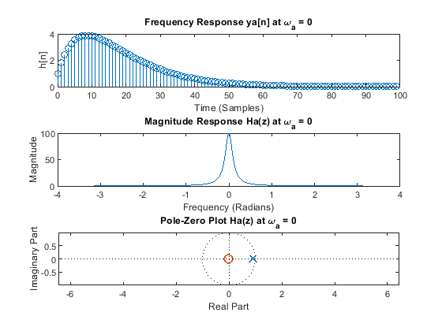 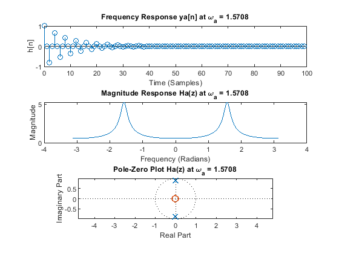 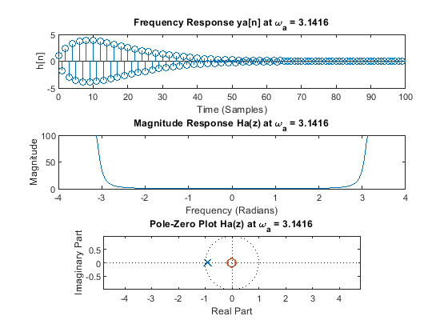
2 (b) FILTER 2
H_b = zeros(1000,3); y1 = zeros(100,3); b = 1; omega_a = [0 pi/2 pi]; x1 = zeros(N,1); x1(1) = 1; a1 = 1; for i = 1:length(omega_a) y2(:,i) = filter([1 -2*b*cos(omega_a(i)) b^2],a1, x1); H_b(:,i) = DTFT(filter([1 -2*b*cos(omega_a(i)) b^2],a1, x1), w); end for i = 1:length(omega_a) % Frequency response figure; subplot(3, 1, 1); stem(n, y2(:, i)); title(['Frequency Response ya[n] at \omega_a = ', num2str(omega_a(i))]); xlabel('Time (Samples)'); ylabel('h[n]'); % Magnitude response subplot(3, 1, 2); plot(w, abs(H_b(:, i))); title(['Magnitude Response Ha(z) at \omega_a = ', num2str(omega_a(i))]); xlabel('Frequency (Radians)'); ylabel('Magnitude'); % Pole-zero plot subplot(3, 1, 3); pzplot([1 -2*b*cos(omega_a(i)) b^2], a1); % Pole-zero plot title(['Pole-Zero Plot Ha(z) at \omega_a = ', num2str(omega_a(i))]); axis equal; end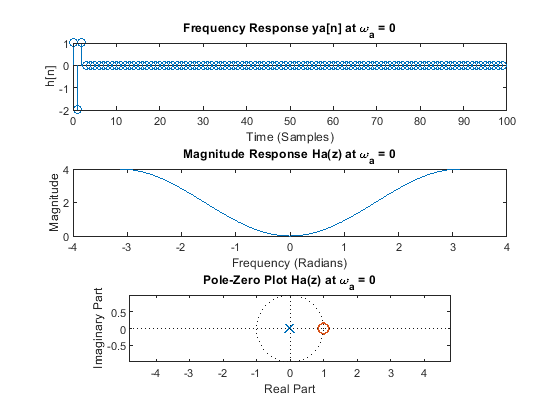 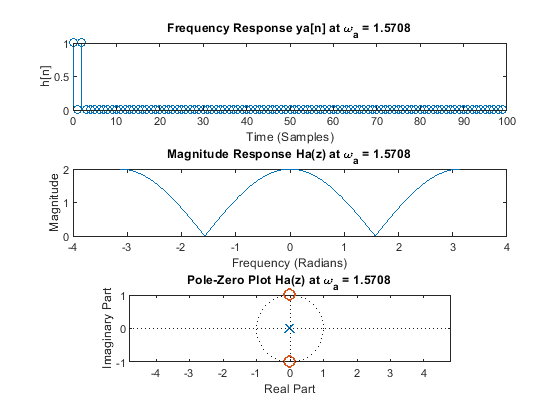 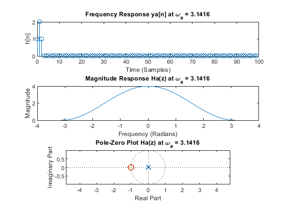
2 (c) ANSWER QUESTION
Ha(z) is an IIR filter because it has poles located in places other than the origin. Hb(z) is an FIR filter because it's poles are located only at the origin.
2 (d) ANSWER QUESTION
% Changing w0 moves the location of the poles and zeros on the plot. For % 2(a), changing w0 changed the location of the poles. For 2(b) changing w0 % changed the location of the zeros.
2 (e) ANSWER QUESTION
% When w0 = pi, Ha(z) is a highkey high pass filter and Hb(z) is a lowpass filter % When w0 = pi/2, Ha(z) is high pass filter and Hb(z) is a notch filter % When w0 = 0, Ha(z) is a lowkey lowpass filter and Hb(z) is a highpass % filter % The filtering response for Ha and Hb are opposite because the two filters % are reciprocal.
QUESTION 3: IIR FILTERS IN Z-DOMAIN
% DEFINE AXES w = -pi:pi/500:pi-pi/500; % DO NOT REMOVE THE THREE LINES BELOW N = 1000; n = 0:N-1; x = [cos( (5*pi/8)*n ) zeros(1,N) sin( (2*pi/8)*n ) zeros(1,N) 3*cos( (6*pi/8)*n + 3*pi/4) zeros(1,N) ... cos( (3*pi/8)*n ) zeros(1,N) 2*cos( (1*pi/8)*n - 2*pi/4) zeros(1,N) 0.5*cos( (4*pi/8)*n - pi/8)];
3 (a) FILTER 1
wa = (5*pi)/8; wb = (6*pi)/8; a = 0.999; b = 1/0.999; yt = filter([1 -2*b*cos(wa) b^2], [1 -2*a*cos(wa) a^2], x); yt = filter([1 -2*b*cos(wb) b^2], [1 -2*a*cos(wb) a^2], yt); Ht = DTFT(yt, w); % Frequency response figure; subplot(2,3, 1); stem(x); title('Input'); xlabel('Time (Samples)'); ylabel('h[n]'); subplot(2, 3, 2); stem(yt); title('Output'); xlabel('Time (Samples)'); ylabel('h[n]'); % Magnitude response subplot(2, 3, 3); plot(w, abs(DTFT(x,w))); title('DTFT before filtering'); xlabel('Time(samples)'); ylabel('X(e^jw_hat'); subplot(2, 3, 4); plot(w,abs(Ht)); title('Magnitude Response of h'); xlabel('Normalized Frequency (Radians)'); ylabel('Magnitude'); % Pole-zero plot subplot(2,3, 5); pzplot(conv([1 -2*b*cos(wa) b^2],[1 -2*a*cos(wb) b^2]), conv([1 -2*a*cos(wa) a^2],[1 -2*a*cos(wb) a^2])); % Pole-zero plot title('Pole-Zero Plot Ht'); axis equal;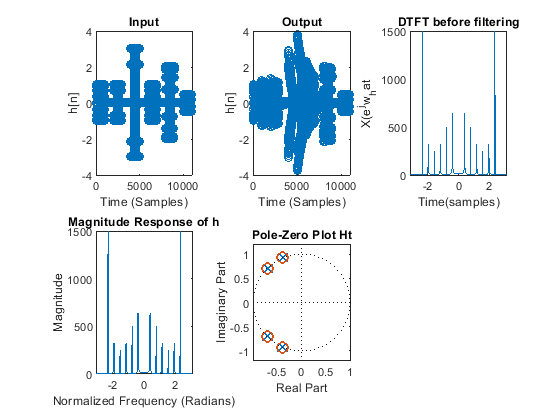
3 (b) ANSWER QUESTIONS
% The filter is an all-pass filter because the poles and zeros cancel out. % The filter affects the phase or group delay of the input
3 (c) FILTER 2
a = 0.8; b = 1; yt = filter(1, [1 -2*a*cos(pi/2) a^2], x); yt = filter([1 -2*b*cos(0) b^2], 1, yt); yt = filter([1 -2*b*cos(pi/4) b^2], 1, yt); yt = filter([1 -2*b*cos((3*pi)/8) b^2], 1, yt); yt = filter([1 -2*b*cos((5*pi)/8) b^2], 1, yt); yt = filter([1 -2*b*cos((6*pi)/8) b^2], 1, yt); yt = filter([1 -2*b*cos(pi) b^2], 1, yt); Ht = DTFT(yt, w); % Frequency response figure; subplot(2,3, 1); stem(x); title('Input'); xlabel('Time (Samples)'); ylabel('h[n]'); subplot(2, 3, 2); stem(yt); title('Output'); xlabel('Time (Samples)'); ylabel('h[n]'); % Magnitude response subplot(2, 3, 3); plot(w, abs(DTFT(x,w))); title('DTFT before filtering'); xlabel('Time(samples)'); ylabel('X(e^jw_hat'); subplot(2, 3, 4); plot(w,abs(Ht)); title('Magnitude Response of h'); xlabel('Normalized Frequency (Radians)'); ylabel('Magnitude'); % Pole-zero plot subplot(2,3, 5); pzplot(conv(conv(conv(conv(conv([1 -2*b*cos(0) b^2], [1 -2*b*cos(pi/4) b^2]), [1 -2*b*cos((3*pi)/8) b^2]), [1 -2*b*cos((5*pi)/8) b^2]), [1 -2*b*cos((6*pi)/8) b^2]), [1 -2*b*cos(pi) b^2]), [1 -2*a*cos(pi/2) a^2]); % Pole-zero plot title('Pole-Zero Plot Ht'); axis equal;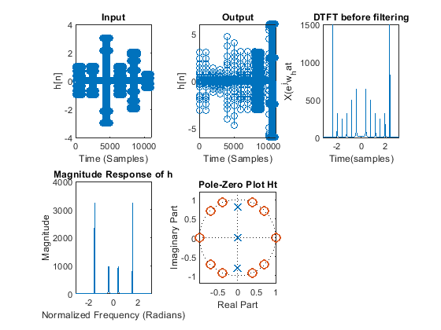
3 (d) ANSWER QUESTIONS
% The filter is a bandpass filter. Ha(z) provides the nonzero poles of the % filter, if removed if removed the magnitude would be higher since poles % pull up the magnitude response.
3 (e) FILTER 3
b = 1; a = 0.66; yt = filter([1 -2*b*cos(pi) b^2], 1, x); yt = filter(1, [1 -2*a*cos(pi/8) a^2], yt); yt = filter(1, [1 -2*a*cos(pi/8) a^2], yt); Ht = DTFT(yt, w); % Frequency response figure; subplot(2,3, 1); stem(x); title('Input'); xlabel('Time (Samples)'); ylabel('h[n]'); subplot(2, 3, 2); stem(yt); title('Output'); xlabel('Time (Samples)'); ylabel('h[n]'); % Magnitude response subplot(2, 3, 3); plot(w, abs(DTFT(x,w))); title('DTFT before filtering'); xlabel('Time(samples)'); ylabel('X(e^jw_hat'); subplot(2, 3, 4); plot(w,abs(Ht)); title('Magnitude Response of h'); xlabel('Normalized Frequency (Radians)'); ylabel('Magnitude'); % Pole-zero plot subplot(2,3, 5); pzplot([1 -2*b*cos(pi) b^2], conv([1 -2*a*cos(pi/8) a^2],[1 -2*a*cos(pi/8) a^2])); % Pole-zero plot title('Pole-Zero Plot Ht'); axis equal;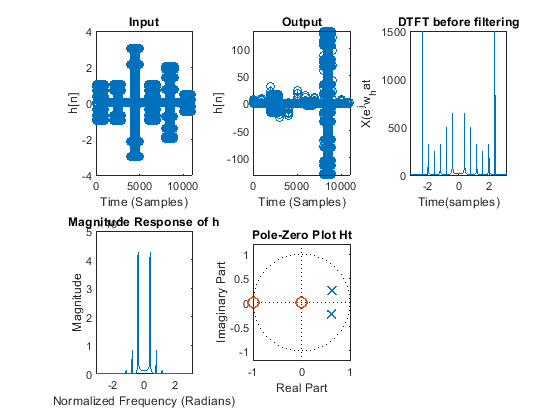
3 (f) ANSWER QUESTIONS
% This filter is lowpass since there is a zero at pi, so the higher % frequences are attentuated. The zero at 0 also means there is a positive % time shift
3 (g) NOTCH FILTER
b = 1; a = 0.95; yt = filter([1 -2*b*cos(pi/4) b^2], [1 -2*a*cos(pi/4) a^2], x); Ht = DTFT(yt, w); % Frequency response figure; subplot(2,3, 1); stem(x); title('Input'); xlabel('Time (Samples)'); ylabel('h[n]'); subplot(2, 3, 2); stem(yt); title('Output'); xlabel('Time (Samples)'); ylabel('h[n]'); % Magnitude response subplot(2, 3, 3); plot(w, abs(DTFT(x,w))); title('DTFT before filtering'); xlabel('Time(samples)'); ylabel('X(e^jw_hat'); subplot(2, 3, 4); plot(w,abs(Ht)); title('Magnitude Response of h'); xlabel('Normalized Frequency (Radians)'); ylabel('Magnitude'); % Pole-zero plot subplot(2,3, 5); pzplot([1 -2*b*cos(pi/4) b^2], [1 -2*a*cos(pi/4) a^2]); % Pole-zero plot title('Pole-Zero Plot Ht'); axis equal; sound(yt, 2000);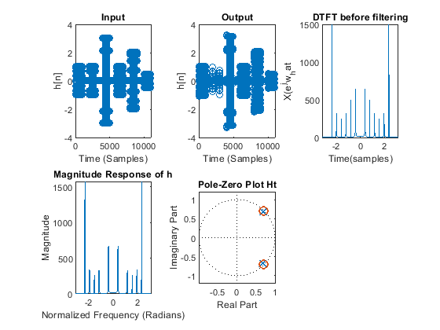
3 (h) NOTCH FILTER APPLIED TO AUDIO
% DO NOT REMOVE THE TWO LINES BELOW % MAKE SURE 'noisy2.wav' IS IN THE SAME DIRECTORY AS THIS FILE [x2,fs] = audioread('noisy2.wav'); w = -pi:pi/5000:pi; Hn = DTFT(x2, w); a = 0.95; b = 1; y = 1; Ht = 1; [~, max_n] = maxk(abs(Hn), 5); max2 = unique(w(max_n), 'stable'); y = x2; for i = 1:length(max2) y = filter(1, [1 -2*a*cos(max2(i)) a^2], filter([1 -2*b*cos(max2(i)) b^2], 1, y)); end Ht = DTFT(yt, w); figure; subplot(1, 2, 1); plot(w, abs(Hn)); title('Magnitude Plot of noise'); subplot(1, 2, 2); plot(w, abs(Ht)); title('Magnitude Plot of filtered noise'); audiowrite('filtered_noisy2.wav', y/max(abs(y)), fs);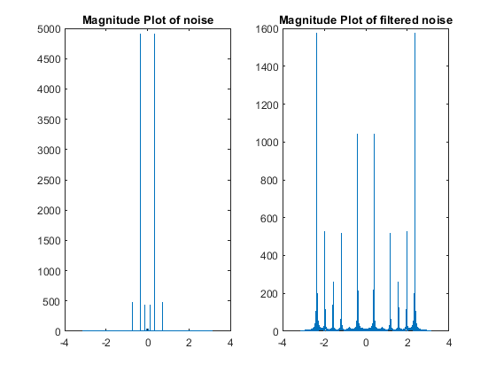
3 (i) ANSWER QUESTIONS
% The difference between the results from lab 6 and the new results are % according to the chart there are much more of a magnitude response with % the filtered noise, since we canceled out the noisy frequency it was % easier to hear the sound. When comaring what was heard, the original % noisy2 sounded like a singular noise slowly increasing to be louder and then % decreasing to be lower. However, while the filtered_noise2 follows this % pattern, there is much more of a dynamic noise that it makes as it is % rising and falling.
ALL FUNCTIONS SUPPORTING THIS CODE %% % ==================================================================
NOTE: YOU DO NOT NEED TO ADD COMMENTS IN THE CODE BELOW. WE JUST NEEDED POLE-ZERO PLOTTING CODE AND THUS WROTE IT. ==================================================================
function pzplot(b,a) % PZPLOT(B,A) plots the pole-zero plot for the filter described by % vectors A and B. The filter is a "Direct Form II Transposed" % implementation of the standard difference equation: % % a(1)*y(n) = b(1)*x(n) + b(2)*x(n-1) + ... + b(nb+1)*x(n-nb) % - a(2)*y(n-1) - ... - a(na+1)*y(n-na) % % MODIFY THE POLYNOMIALS TO FIND THE ROOTS b1 = zeros(max(length(a),length(b)),1); % Need to add zeros to get the right roots a1 = zeros(max(length(a),length(b)),1); % Need to add zeros to get the right roots b1(1:length(b)) = b; % New a with all values a1(1:length(a)) = a; % New a with all values % FIND THE ROOTS OF EACH POLYNOMIAL AND PLOT THE LOCATIONS OF THE ROOTS h1 = plot(real(roots(a1)), imag(roots(a1))); hold on; h2 = plot(real(roots(b1)), imag(roots(b1))); hold off; % DRAW THE UNIT CIRCLE circle(0,0,1) % MAKE THE POLES AND ZEROS X's AND O's set(h1, 'LineStyle', 'none', 'Marker', 'x', 'MarkerFaceColor','none', 'linewidth', 1.5, 'markersize', 8); set(h2, 'LineStyle', 'none', 'Marker', 'o', 'MarkerFaceColor','none', 'linewidth', 1.5, 'markersize', 8); axis equal; % DRAW VERTICAL AND HORIZONTAL LINES xminmax = xlim(); yminmax = ylim(); line([xminmax(1) xminmax(2)],[0 0], 'linestyle', ':', 'linewidth', 0.5, 'color', [1 1 1]*.1) line([0 0],[yminmax(1) yminmax(2)], 'linestyle', ':', 'linewidth', 0.5, 'color', [1 1 1]*.1) % ADD LABELS AND TITLE xlabel('Real Part') ylabel('Imaginary Part') title('Pole-Zero Plot') end function circle(x,y,r) % CIRCLE(X,Y,R) draws a circle with horizontal center X, vertical center % Y, and radius R. % % ANGLES TO DRAW ang=0:0.01:2*pi; % DEFINE LOCATIONS OF CIRCLE xp=r*cos(ang); yp=r*sin(ang); % PLOT CIRCLE hold on; plot(x+xp,y+yp, ':', 'linewidth', 0.5, 'color', [1 1 1]*.1); hold off; end function H = DTFT(x,w) % DTFT(X,W) compute the Discrete-time Fourier Transform of signal X % acroess frequencies defined by W. H = zeros(length(w),1); for nn = 1:length(x) H = H + x(nn).*exp(-1j*w.'*(nn-1)); end end